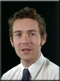
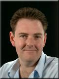

Authors
James Kelly

He joined BT after completing and industrial placement with the Fibre Systems group developing interfacing systems for high speed optical access networks. He then developed a customer interface for passive optical network and digital subscriber line technology.
James now manages the Broadband Access Facility at BT Adastral Park. His main areas of work involve multi-layer performance testing of asymmetric and very high speed digital subscriber line technology, co-ordinating BT’s contribution to the Full Service Access Networks initiative and arranging exhibitions of access technologies. He is a Member of the Institute of Electrical Engineers.
Mark Whittle

During his 20 years at BT he has been involved with many varied telecommunications based projects including optical fibre characterisation, optical fibre networks and video transmission systems. Mark is currently part of a team responsible for the demonstration and testing of asymmetric and very high speed digital subscriber line technology within the Adastral Park Broadband Access Facility.
Richard Adnams
Richard Adnams joined BT as an apprentice in 1982, working in BTHQ's Circuit Lab in London. He has both an ONC and HNC in telecommunications engineering, and is currently studying for an Open University BSc honours degree - majoring in computer science.
Before moving to BT Labs in 1989, he worked on the Automatic Call Recording Equipment (ACRE) project within Operator Services, providing software/hardware/fault desk services. Whilst at the labs, he has been working in an area specialising in optical fibre systems, including research into novel optical devices and broadband passive optical network technology.
Recently his work has split between core transport and access transport. He is involved in longhaul/subsea optical network performance modelling; Full Service Access Network (FSAN) studies - including the development of the first VDSL brick; the evolution of BT’s FSAN testbed; and investigations into multi-layer end to end performance of high speed, bandwidth contended ATM access network delivery technologies.
Mike Enrico
Michael Enrico received his BSc and PhD degrees in physics from Lancaster University in 1991 and 1995. His PhD work involved experimental studies on superfluid helium at ultralow temperatures. After a couple of years working in the same group as a research associate, he took a change in career direction and moved into telecommunications.
Since joining BT in 1997 he has worked mainly on the study and development of broadband access network architectures especially in relation to BT Adastral Park's Broadband Access Facility (BAF). Today he still contributes to the work done in the BAF but is currently concentrating on the shorter term requirements of IP network solution design for BT's Midband platform.
© Copyright British Telecommunications plc 1999